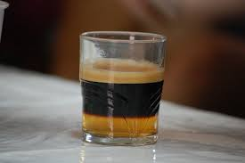

Coffee World

Coffee is a brewed drink prepared from roasted coffee beans, the seeds of berries from certain Coffea species. From the coffee fruit, the seeds are separated to produce a stable, raw product: unroasted green coffee. The seeds are then roasted, a process which transforms them into a consumable product: roasted coffee, which is ground into fine particles that are typically steeped in hot water before being filtered out, producing a cup of coffee.
Coffee is darkly colored, bitter, slightly acidic and has a stimulating effect in humans, primarily due to its caffeine content.
Types of coffee
Espresso

Espresso is a coffee-brewing method of Italian origin, in which a small amount of nearly boiling water is forced under 9–10 bars of pressure through finely-ground coffee beans. Espresso coffee can be made with a wide variety of coffee beans and roast
Cortado

A cortado is a beverage consisting of espresso mixed with a roughly equal amount of warm milk to reduce the acidity.[1][2] The milk in a cortado is steamed, but not frothy and "texturized" as in many Italian coffee drinks.The word cortado is the past
Iced coffee

Iced coffee is a coffee beverage served cold. It may be prepared either by brewing coffee in the normal way and then serving it over ice or in cold milk, or by brewing the coffee cold. In hot brewing, sweeteners and flavoring may be added before cooling,
Carajillo

A carajillo is a hot coffee drink to which a hard liquor is added. It is typical of Spain and several Latin American countries, such as Colombia, where it is usually made with brandy, Cuba,where it is usually made with rum, and some areas of Mexico,